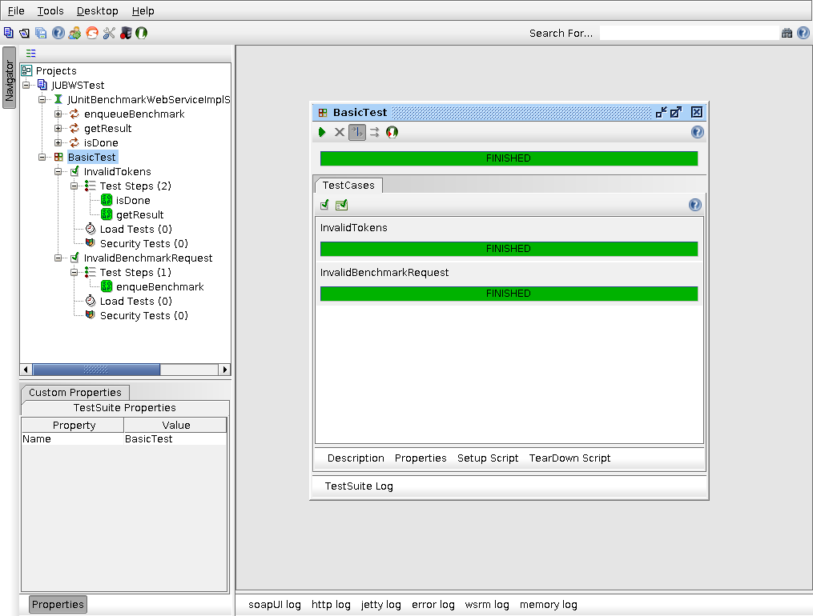
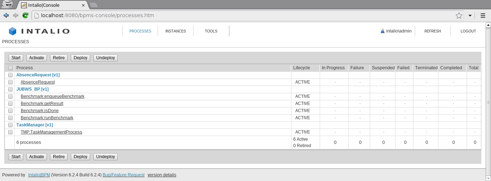
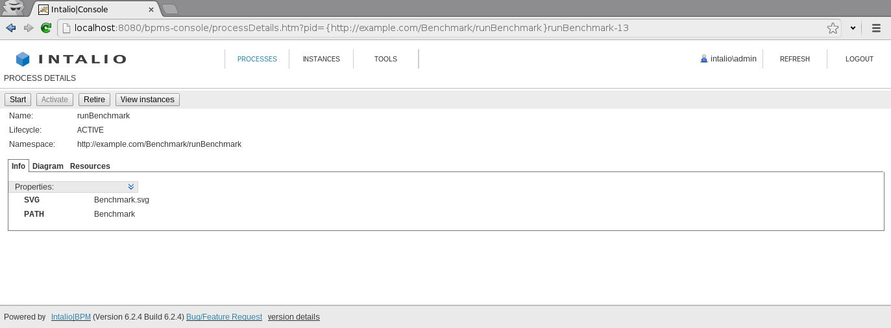
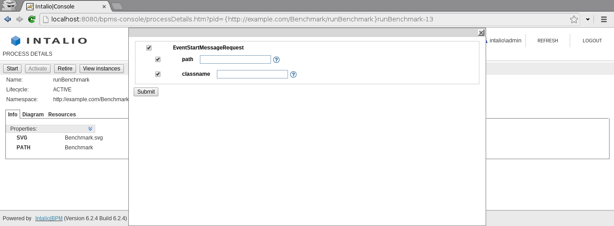
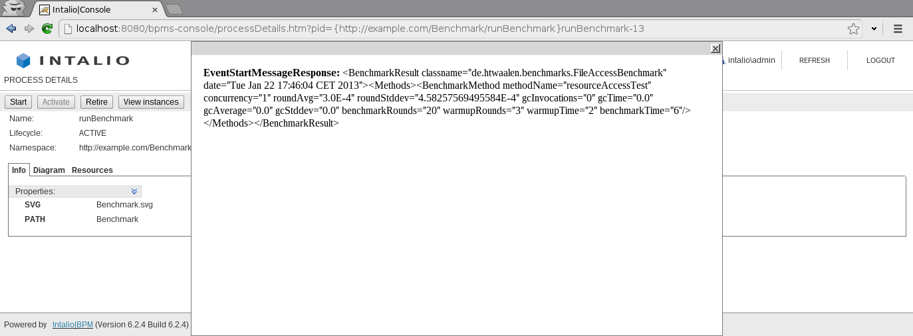

A webservice for executing junit benchmarks. For the following instructions you need to have Maven installed.
The Doxygen documentation can be generated using doxygen in the JUBWS directory.
Than it can be found at doc/generated/html/index.html.
The JavaDocs can be generated using Maven with mvn site and can then be found at /target/site/index.html. This site provides an overview of the maven project and links to the JavaDoc under Project Reports.
The tests for the JUBWS Project depend on a subproject to be packaged first, but since this subproject is dependent on JUBWS to be packaged and installed in the local Maven repo. You need to build and install JUBWS first and skip its tests.
mvn install -DskipTests
Than you can package the subproject in de benchmarks directory.
cd benchmarks
mvn package
After you successfully packaged the benchmarks project you can test JUBWS
cd ..
mvn test
mvn -Pserver -DskipTests
When the server is ready you should be able to browse http://localhost:9000/junitservice?wsdl and see the WSDL file for the service.
You can also run in on a Tomcat server use mvn tomcat:run -Dmaven.tomcat.port=8081 to start one. You will find the WSDL at http://localhost:8081/jubws/services/junitservice?wsdl
On the Tomcat server there will also be an RSS Servlet available as http://localhost:8081/jubws/rss.
If you want to deploy to an existing server adjust the url, user and password for the Tomcat server in the pom.xml and use mvn tomcat:deploy.
mvn -Pclient -DskipTests
In the subdirectory soapUI is a soapUI project you can import and execute the test case.

You can find the Software at http://bpms.intalio.com/downloads.html
First start the Intalio BPMS server.
The JUBWS_BP contains a Intalio Designer Project you can import with the designer.
After you imported it you can deploy it to the server with the designer.
Make sure the JUBWS server is also running (mvn -Pserver).
Go to the BPMS Management Console at http://localhost:8080/bpms-console and login (default login: admin/changeit). 
Click on runBenchmark. 
And than on Start. 
